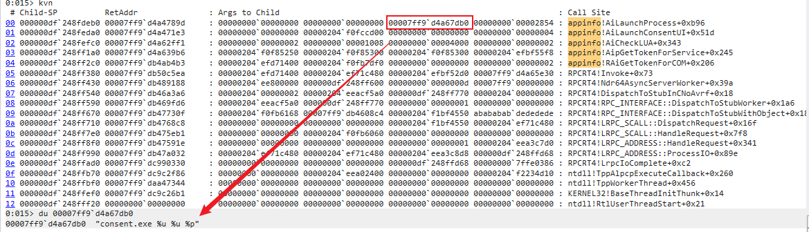
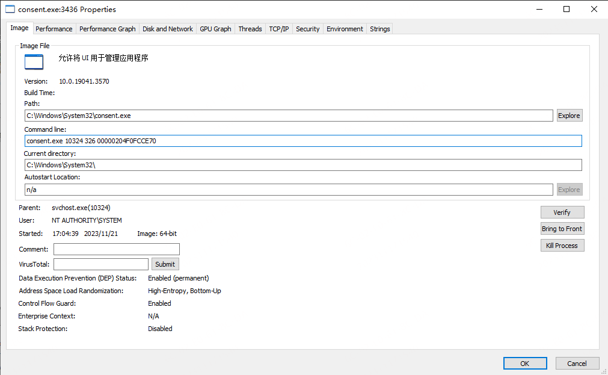
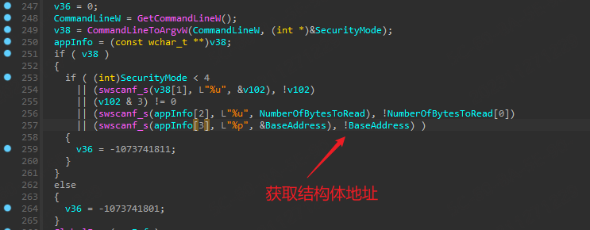
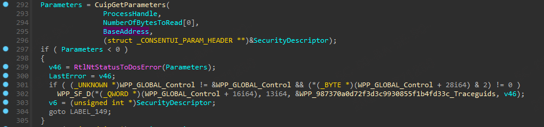
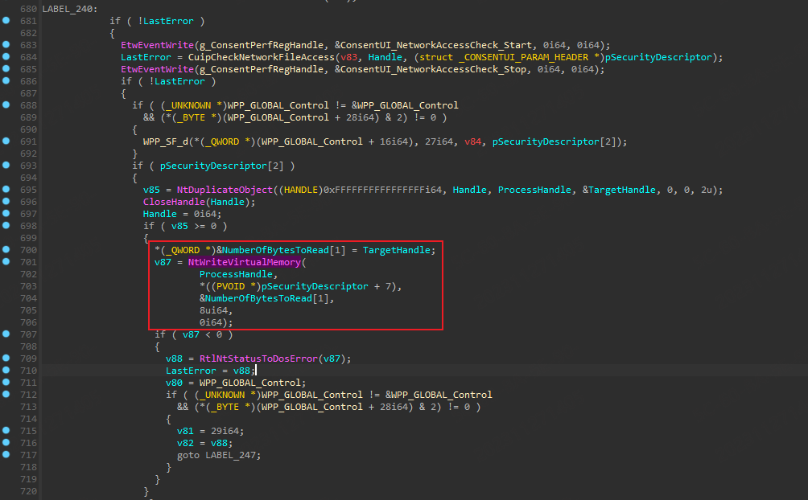
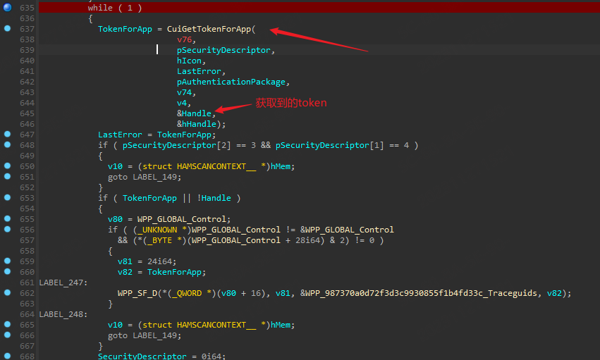
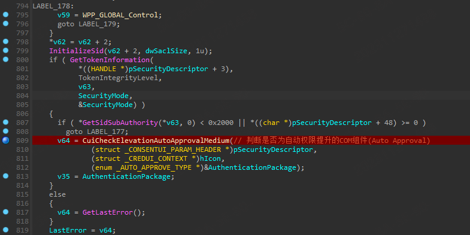
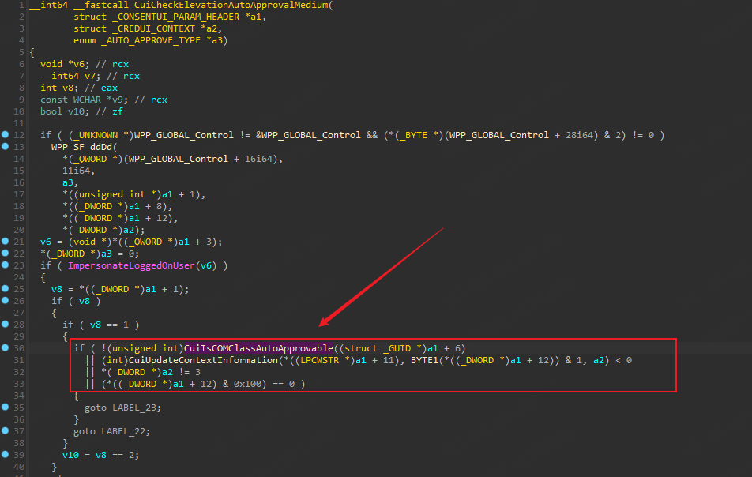
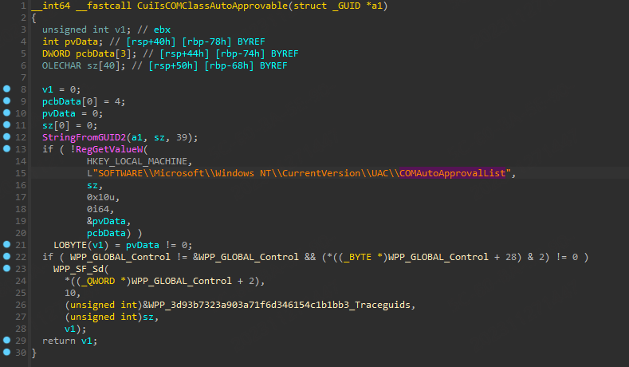
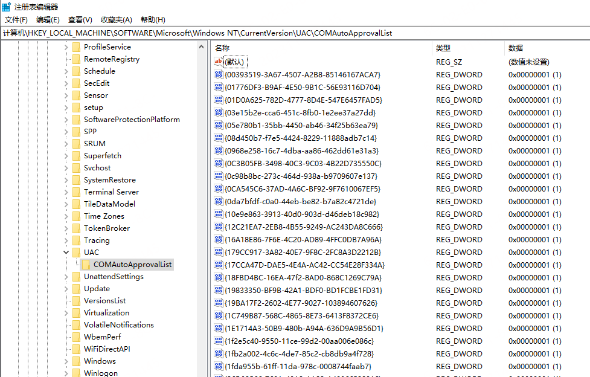

0x01 前言
在阅读本文之前确保大家已经基本了 UAC 的大致流程。
UAC 的请求都是交由 AppInfo 这个系统服务来处理的，AppInfo 的进程为 svchost。 提权]流程中，Appinfo 也仅仅是作为中间连接的一环，一方面处理应用程序请求来的UAC请求，另一方面拉起consent.exe 来处理用户操作，最后将用户操反馈给应用程序。这就是 UAC 的大致流程。本文着重Appinfo 的相关流程来说明一下如何利用 Appinfo 进程 UAC Bypass。
0x02 AppInfo 调用说明
操作：可以调试 Appinfo 的进程，然后通过启动 UAC 进程观察一个程序的uac请求到了 AppInfo 之后的流程。结IDA]的 exports 可以在一些关键函数打上断点然后进行调试。当然因为网上已经有大量的分析和调用流程说明了，所以这一步骤可以省略直接在一些关键的函数上打断点调试查看堆栈和参数。
因为UAC的提权都需要创建UI进程来让用户进行操作，这个UI进行就是 consent.exe，所以直接观察 consent.exe 的创建和调用即可。
这里直接对 AiLaunchConsentUI 打断点然后查看堆栈。
consent.exe的创建
AppInfo 服务收到rpc消息后，最终通过 CreateProcessAsUser 创建。
这篇文章讲的比较细致：UAC逆向
调用堆栈如下所示：
[0x0] ntdll!NtCreateUserProcess 0xdf231fc698 0x7ff9da72b473
[0x1] KERNELBASE!CreateProcessInternalW+0xfe3 0xdf231fc6a0 0x7ff9da728a03
[0x2] KERNELBASE!CreateProcessAsUserW+0x63 0xdf231fdc70 0x7ff9daa4de30
[0x3] KERNEL32!CreateProcessAsUserWStub+0x60 0xdf231fdce0 0x7ff9d4a4526b
[0x4] appinfo!AiLaunchProcess+0x8eb 0xdf231fdd50 0x7ff9d4a4789d
[0x5] appinfo!AiLaunchConsentUI+0x51d 0xdf231fec40 0x7ff9d4a471e3
[0x6] appinfo!AiCheckLUA+0x343 0xdf231fee60 0x7ff9d4a62ff1
[0x7] appinfo!AipGetTokenForService+0x245 0xdf231ff040 0x7ff9d4a639b6
[0x8] appinfo!RAiGetTokenForCOM+0x206 0xdf231ff160 0x7ff9db4ab4b3
[0x9] RPCRT4!Invoke+0x73 0xdf231ff220 0x7ff9db50c5ea
[0xa] RPCRT4!Ndr64AsyncServerWorker+0x39a 0xdf231ff2d0 0x7ff9db489188
[0xb] RPCRT4!DispatchToStubInCNoAvrf+0x18 0xdf231ff3e0 0x7ff9db46a3a6
[0xc] RPCRT4!RPC_INTERFACE::DispatchToStubWorker+0x1a6 0xdf231ff430 0x7ff9db469fd6
[0xd] RPCRT4!RPC_INTERFACE::DispatchToStubWithObject+0x186 0xdf231ff510 0x7ff9db47730f
[0xe] RPCRT4!LRPC_SCALL::DispatchRequest+0x16f 0xdf231ff5b0 0x7ff9db4768c8
[0xf] RPCRT4!LRPC_SCALL::HandleRequest+0x7f8 0xdf231ff680 0x7ff9db475eb1
[0x10] RPCRT4!LRPC_ADDRESS::HandleRequest+0x341 0xdf231ff790 0x7ff9db47591e
[0x11] RPCRT4!LRPC_ADDRESS::ProcessIO+0x89e 0xdf231ff830 0x7ff9db47a032
[0x12] RPCRT4!LrpcIoComplete+0xc2 0xdf231ff970 0x7ff9dc990330
[0x13] ntdll!TppAlpcpExecuteCallback+0x260 0xdf231ffa10 0x7ff9dc9c2f86
[0x14] ntdll!TppWorkerThread+0x456 0xdf231ffa90 0x7ff9daa47344
[0x15] KERNEL32!BaseThreadInitThunk+0x14 0xdf231ffd90 0x7ff9dc9c26b1
[0x16] ntdll!RtlUserThreadStart+0x21 0xdf231ffdc0 0x0 consent.exe ppid 结构体长度 结构体地址

如上所示可以看到 consent.exe 的命令行传递了三个参数，分别为父进程id，结构体长度和结构体地址。那么基本上可以确定，uac的相关信息就在该结构体中，consent通过读写父进程的地址空间，将用户操作结果写入到对结构体对应的地址中。（这里有兴趣的同学还可以看一下consent.exe的调用流程。)查看相关参数解析的部分如下所示：


可以看到命令行参数3的结构体对应的是 _CONSENTUI_PARAM_HEADER ，目前在网上找不到相关的结构，不过这里都不重要，大致了解这个过程和流程即可。
consentui.exe 的鉴权与回传
这里主要观察一下 consent.ui 拿到参数之后是如何工作的，又是如何将获取的权限写回的。

在 WinMain 函数结束的地方调用了 NtWriteVirtualMemory 写入了 TargetHandle ，而这个 TargetHandle 就是在 CuiGetTokenForApp 中获取到的管理员Token] 句柄。最后又把这个这个句柄写回到了 _CONSENTUI_PARAM_HEADER+7 的位置。
consentui 的弹窗逻辑
通过分析找到了决定是否弹窗的关键函数为:

如果上述判断需要弹窗的话，最终跳转到 CuiStartBackgroundWindowAndSwitchToSecureDesktop 函数去执行操作。下面就 CuiCheckElevationAutoApprovalMedium 函数展开看一下判断的逻辑。如下所示，在函数内部首先是判断com组件是不是自提升的组件，调用的 CuIISCOMClassAutoApprovable 并且传入了COM组件的GUID。



判断完成之后还需要几次跳转才能到弹窗的函数。以上就是 consent.exe 的弹窗逻辑了。关键点大概就是以上三点，通过 RAiLuanchAdminProcess 创建 consent.exe，consent.exe 通过CuiIsCOMClassAutoApprovable 检查 com组件 权限，CuiStartBackgroundWindowAndSwitchToSecureDesktop 创建界面ui获取权限，NtWriteVirtualMemory 写内存方式写入获取到权限的句柄。